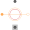
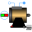

PermanentMagnetPermanent magnet model without intrinsic reluctance, represented by magnetic potential difference |

|
Information
This information is part of the Modelica Standard Library maintained by the Modelica Association.
Permanent magnet model with magnetic, mechanical and thermal connector including losses. The PM model is source of constant magnetic potential difference. The PM loss is calculated by PermanentMagnetLosses.
Parameters (4)
| useHeatPort |
Value: false Type: Boolean Description: = true, if heatPort is enabled |
|---|---|
| m |
Value: 3 Type: Integer Description: Number of phases |
| permanentMagnetLossParameters |
Value: Type: PermanentMagnetLossParameters Description: Permanent magnet loss parameters |
| V_m |
Value: Complex(re = 1, im = 0) Type: ComplexMagneticPotentialDifference Description: Complex magnetic potential difference w.r.t. the rotor fixed reference frame |
Inputs (1)
| is |
Type: ComplexCurrent[m] Description: Instantaneous stator currents |
|---|
Connectors (5)
| flange |
Type: Flange_a Description: Shaft end |
|
|---|---|---|
| support |
Type: Flange_a Description: Housing and support |
|
| heatPort |
Type: HeatPort_a Description: Optional port to which dissipated losses are transported in form of heat |
|
| port_p |
Type: PositiveMagneticPort Description: Positive quasi-static magnetic port of fundamental wave machines |
|
| port_n |
Type: NegativeMagneticPort Description: Negative quasi-static magnetic port of fundamental wave machines |
Components (5)
| permanentMagnetLossParameters |
Type: PermanentMagnetLossParameters Description: Permanent magnet loss parameters |
|
|---|---|---|
| is |
Type: ComplexCurrent[m] Description: Instantaneous stator currents |
|
| V_m |
Type: ComplexMagneticPotentialDifference Description: Complex magnetic potential difference w.r.t. the rotor fixed reference frame |
|
| Phi |
Type: ComplexMagneticFlux Description: Complex magnetic flux |
|
| V_mGamma |
Type: ComplexMagneticPotentialDifference Description: Magnetic potential difference w.r.t. the reference frame |
Used in Components (1)
|  |
Modelica.Magnetic.QuasiStatic.FundamentalWave.BasicMachines.SynchronousMachines Permanent magnet synchronous machine with optional damper cage |